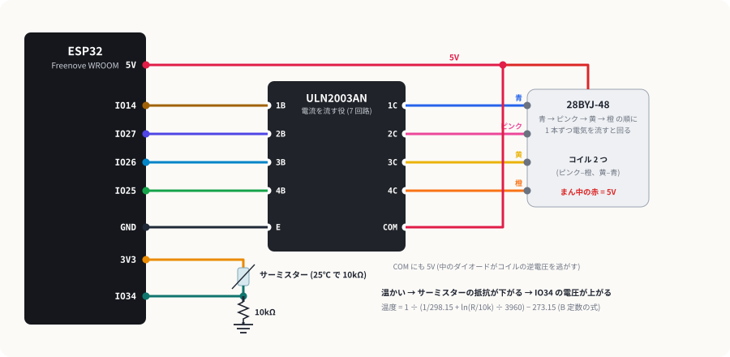
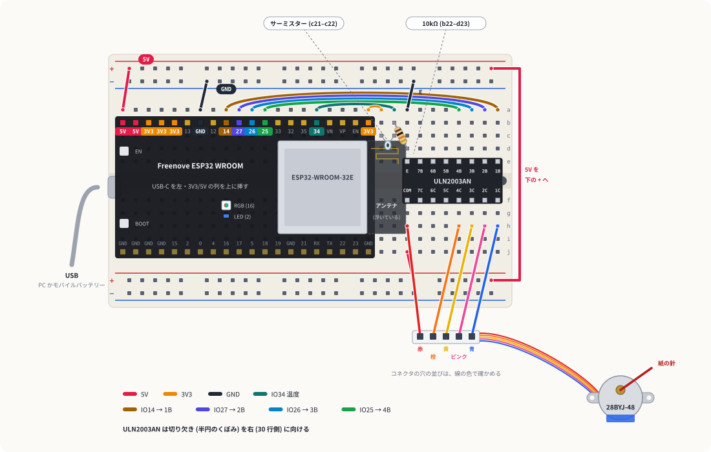
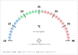

針で指す温度計
サーミスターで温度を測り、ステッピングモーターの針で半円の目盛りを指すアナログ式の温度計を作ります。サーミスターを指でつまむと、針がじわっと右へ動きます。モーターを回す、温度を測る、2 つをつなぐ、の 3 段で進めます。
1しくみ
ステッピングモーターは「順番に電気を流す」と回る
28BYJ-48 の中にはコイルが 2 組あり、5 本の線のうち赤がまん中 (共通)、残りの 4 本 (青・ピンク・黄・橙) がコイルの端です。青 → ピンク → 黄 → 橙の順に 1 本ずつ電気を流すと、そのたびに少しずつ回ります。中のギヤで 1/64 に減速しているので、1 回転に 2048 回の切り替えが要り、そのぶん力が強く、狙った角度で正確に止まります (秋月の仕様: 減速比 1:64、ステップ角 0.0879°)。
このノートでは1 度に 1 つのコイルだけに電気を流し (1 相励磁)、止まっている間は全部切ります。コイルの抵抗は 22Ω なので、5V で 1 本あたり約 0.23A 流れます。1 本ずつなら USB の電源でまかなえます。
ULN2003AN: ESP32 の代わりに電流を流す
ESP32 のピンからは 0.23A も流せません。ULN2003AN は「入力が H になると、出力を GND につなぐ」スイッチが 7 つ入った IC で、1 つあたり 0.5A まで流せます。入力は 2.8V 以上で ON になるので (秋月の仕様)、ESP32 の 3.3V で動かせます。COM ピンを 5V につなぐと、中のダイオードがコイルを切った瞬間に出る逆向きの電圧を逃がしてくれます。
サーミスター: 温度で抵抗が変わる
使うのは 25℃ で 10kΩ の NTC サーミスター (B 定数 3960) で、温かいほど抵抗が下がります。首振りガジェットの CdS と同じく 10kΩ と分圧して IO34 で電圧を読み、B 定数の式で温度に直します。
1/T = 1/298.15 + ln(R ÷ 10kΩ) ÷ 3960 (T はケルビン。℃ にするときは 273.15 を引く)

2配線
Freenove のボードはいつもの向きで 1〜20 行に。ULN2003AN は 23〜30 行に、e 列と f 列にまたがり、切り欠き (半円のくぼみ) を右 (30 行側) に向けて挿します。こうすると上の e 列に入力 (1B〜4B) と E、下の f 列に出力 (1C〜4C) と COM が並びます。
ワイヤレス操縦や赤外線リモコンのページでは + ラインが 3.3V でした。このページはモーター用に 5V を流します。サーミスターの 3.3V は + ラインではなく a20 (3V3) から取ります。組み替えるときは、前の作品の線を全部抜いてから始めてください。

| # | どこから | どこへ | 役割 |
|---|---|---|---|
| 1 | ULN2003AN | e23〜e30 / f23〜f30 | 切り欠きを右に。e23 = E、e27〜e30 = 4B〜1B、f23 = COM、f27〜f30 = 4C〜1C |
| 2 | a1 (5V) | 上の + ライン | 5V を配る |
| 3 | a7 (GND) | 上の − ライン | GND を配る |
| 4 | 上の − ライン | a23 | ULN2003AN の E (GND)。23 行の上半分が GND になる |
| 5 | a9 (IO14) | a30 | 1B → 青 |
| 6 | a10 (IO27) | a29 | 2B → ピンク |
| 7 | a11 (IO26) | a28 | 3B → 黄 |
| 8 | a12 (IO25) | a27 | 4B → 橙 |
| 9 | 上の + ライン (右端) | 下の + ライン (右端) | 5V を下側へ。ブレッドボードの右の外側を回す |
| 10 | 下の + ライン | j23 | ULN2003AN の COM に 5V |
| 11 | モーターの 赤 | h23 | コイルのまん中に 5V (COM と同じ行) |
| 12 | モーターの 橙・黄・ピンク・青 | h27・h28・h29・h30 | 4C〜1C。コネクタの穴にオス-オス線を挿して、色を見ながら |
| 13 | サーミスター | c21 と c22 | 向きはない |
| 14 | a20 (3V3) | a21 | サーミスターの上側に 3.3V |
| 15 | 10kΩ | b22 と d23 | 分圧の下側。23 行は GND (#4) |
| 16 | a16 (IO34) | a22 | サーミスターと 10kΩ の間の電圧を読む |
Freenove のボードはアンテナが 21〜22 行の上 (d〜h 列) に張り出しています。サーミスターは張り出しの外の c 列に挿します。ULN2003AN の左端がアンテナのすぐ下に来ますが、高さは足ります。
3段階 1: モーターを回す
配線 1〜12 だけで動きます。起動すると 1 回転し、1 秒止まってから逆に 1 回転して戻ります。BOOT を押すともう一度。
- 軸が 6 秒ほどで 1 回転し、同じだけ逆に回って戻る (シリアルモニタに
+2048 ステップ (360°)と出る) - 回っている間、モーターからかすかなジーという音がする (止まると消える = コイルを切っている)
- 震えるだけで回らない → 色の順番 (#12) を見直す。合っていれば
STEP_MSを 4〜5 に上げる
4段階 2: 温度を測る
配線 13〜16 を足します。シリアルプロッタ (115200 baud) に温度が出ます。
- 部屋の温度に近い値 (20〜28℃ くらい) が出る
- サーミスターを指でつまむと、数秒で数℃ 上がり、離すとゆっくり戻る
- テスターで 3V3 と GND の間を測り、その値 (mV) を
VCC_MVに書くと、温度が少し正確になる
5段階 3: 針で温度を指す
目盛り板と針を作る

- 目盛り板を印刷して厚紙に貼る (手で描いてもよい)。中心の印に、軸が通る直径 6mm くらいの穴をあける。
- モーターを目盛り板の裏にテープで留め、軸を穴から表に出す。
- 紙を細く切って針にし、根元にキリで小さな穴をあけて軸に押し込む (ゆるければテープで留める)。
スケッチ
- 書き込むと「針の 0 合わせ」が始まる。3 秒以内に BOOT を押すと、押している間だけ針が左へ回る。左端の 10℃ の目盛りで離す。
- そのまま 3 秒待つと温度計が始まり、針が今の温度へ動く。
- 片付けるときは BOOT を 2 秒長押し。針が左端に戻って止まるので、次に起動したときは 0 合わせが要らない。
- 針が段階 2 で見た温度の目盛りを指す
- サーミスターをつまむと針が右へ、離すと左へ戻る
- 温度が上がると針が左へ回る →
REVERSEをtrueにする
6うまくいかないとき
| 症状 | 見るところ |
|---|---|
| モーターがまったく動かない・震えもしない | 5V が ULN2003AN の COM とモーターの赤に来ているか (#2, #9, #10, #11)。E の GND (#4)。テスターで h23 と GND の間が 5V か測る |
| 行ったり来たりして進まない | コイルの順番。h27〜h30 が 橙・黄・ピンク・青 になっているか |
| ULN2003AN が熱い | すぐ USB を抜いて、5V と GND が逆になっていないか、出力どうしがつながっていないかを見る |
| 温度が -273 や nan | サーミスターか 10kΩ が外れている。a20 → a21 の 3.3V、23 行の GND |
| 針が少しずつずれていく | 重い針でギヤが滑っている。紙の針を軽くする。STEP_MS を上げる |
7改造のアイデア
- 天気予報の気温を指す: Wi-Fi で天気の API から明日の最高気温を取ってきて、針で指す。部屋の温度と切り替えてもよい。
- 針の時計: NTP で時刻を合わせ、24 時間で 1 回転する時計にする。
- 2 本目の針で湿度: DHT11 の湿度を、もう 1 台のモーターで指す (ULN2003AN は 7 回路あるので、もう 1 台ぶん足りる)。